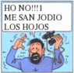

De: La Frikipedia, la enciclopedia extremadamente seria.
De: La Frikipedia, la enciclopedia extremadamente seria. De: La Frikipedia, la enciclopedia extremadamente seria.
|  | ¡¡¡ARGH, MIS OJOS!!! Este artículo está escrito así por algún motivo. Puede contener masivas faltas de ortografía u otros horrores lingüísticos. |
«Es la forma mas facil de ser multimillonario»
~ Carlos Slim Bañandose en su piscina de dinero
La inflación es el termino económico que se utiliza cuando el 31 de diciembre de cada año,El lider de akatsuki sube al wall street y a la media noche sube los precios de todos los artículos existentes,cosa que se intenta justificar con la patética excusa de que a cada dolar que se aumente a la salario se incrementara el precio de cualquier cosa 1 dolar (Excusas subnormales como la de los Nazis irlandeses) y si hacemos el calculo veremos que vamos en un tren bala a la bancarrota (y solo los emos quieren quedar en este estado económico cierto?).
Un ritual perverso en latinoamerica es la negociación anual de los aumentos salariales entre los sindicatos y los gerentes malvados de las empresas,unos intentan justificar el aumento en base a la inflación y los otros justifican la inflación con el aumento de los salarios creando un circulo vicioso(Es una expresión figurativa, aquí nadie fuma porros).La lógica nos dicta que el aumento salarial debe ser mayor a la inflación,pero los asesores económicos del gobierno escuchan Reggaeton lo que explica por que las cosas van tan mal si los lideres sindicalistas se aconsejan de los Emos y los unicos que piensan son los lideres empresariales que son aconsejados por delfínes
Se hace basada en la siguiente formula:
La mayoría de los economistas murieron de un derrame cerebral intentando resolver esa formula,pero un Yupiee muy inteligente decidió interpretarla al azar y saco la conclusión de que todo debía aumentar mucho de precio cada año para que el y sus amigos corredores de bolsa pudieran mantener ese cómodo estilo de vida que estaban llevando.
El banco de Un lugar al que van muchos mafiosos necesitaba muchos fondos,entonces decidió crear una conspiración para ganar dinero que residía en los siguientes puntos,al parecer redactados por un Cangrejo que tenia mucho tiempo libre:
Digamoslo de esta forma ,ellos creen el dinero es una cosa que nos hace mucho peso y nos estorba así que nos quitan esa cantidad de riqueza que agobia nuestras a través de cuotas imperceptibles,son todos unos santos pero segun la universidad herejes,no antes de recibir una golpiza por parte de la sagrada orden de la cultura cani (favor apagar el detector de sarcasmo y desechar la comida traída de afuera)
Mientras la mayoria no sabe como mierda hay inflacion, muy pocos descubrieron, gracias a la teoria maya del fin del mundo, que como todo se va a ir al hoyo y no va haber ni para limpiarse el culo los bienes escasearan y costaran mucho mas de lo que cuestan ahora. Asi la inflacion es un signo mas del fin del mundo.
La bola de cristal que viaja en el tiempo nos dice que este fenómeno maligno empezó en la gran depresión cuando un comerciante perezoso que andaba por la calle estaba buscando ideas para estafar a la gente y llevar el pan a su casa,por que era todo un santo y candidato al nobel de la paz,cuando en una señal milagrosa de monesvol vio a un vago inflando un globo con dinero y una reacción cerebral muy grande lleno su cabeza llegado a la idea de aumentar anualmente el precio de todo cada año para dominar el mundo (Nombrame una sola persona que no quiera eso). Comenzó a difundir la idea en lo que ese tiempo era el wall street,pero todos fingieron reírse de el para que no patentara la idea y se hiciera millonario,un agente de hacienda también escucho le dijo a su gobierno y a su vez este le dijo a todos lo gobiernos para hacerlo todo un fenómeno mundial que terminaría arruinandonos la vida.
El verdadero origen de la guerra de Vietnam fue el siguiente:Varios hippies se quejaban porque la agencia HIELO habia adquirido el control sobre el trafico de los porros y les habían aumentado el precio de una forma que a ellos les parecía exagerado,comenzaron a protestar y a hacer canciones de protesta patéticas,en respuesta el gobierno de los armo una guerra teatral conocida como la Guerra de las galaxias,pero George lucas ya estaba rodando la película,asi que decidieron incendiar un país asiático al azar y mandar a los jóvenes estadounidenses ahí para que pelearan por su país
No estamos hablando de megaman pero nos hicieron censurar los 2 ultimos digitos del año, así como la información que podemos contarles.Todo surgió porque los estadounidenses pensaban que la ultima moda era quedar en quiebra como los famosos y decidieron invertirlo todo en cosas inútiles,como consecuencia los precios de las cosas importantes aumentaron mucho,no pudieron pagarlos y quedaron en quiebra, después de 60 dias de sobrevivir a base de basura pensaron que quizás no había sido una buena idea.
El sistema económico mundial había caído y se necesitaba un cambio para reestlabecer el orden del imperio económico mundialista,del mal.Los economistas sobrevivientes escribieron un libro que decia:

|
La clave es ォオカガキギク
ジスズセゼソゾタダチヂッ ジスズセヵヶヷヸヹヺ ぁあ Ωαβγδεζηθικλμνξοπρςστυφ χψΛΜΝΞΟΠΡΣΧΨΩαυφχsad えぉおかがきぎくぐけげこ 0100101011101010100101 0101010010101010010100 1001010101010100101011 |

|
| Extracto del ultimo libro de ciencias economicas conocido |
Lamentablemente para los sobrevivientes de la segunda epoca post-Apocaliptica se habían perdido todos los libros de binario,griego,chino y gñapes por lo cual nunca sabrán lo que decía este importantisimo mensaje y que enseñanzas podría habernos dejado para el futuro (muy muy lejano)
Ahora viendo el punto de vista de un adulto piensa en alguien que va y compraba sus cosas en un super de los 80 (ohh mira Scooby galletas para los frikis senior) podían comprar muchas cosas como espuma para afeitar y laca industrial para mantener sus horrendos peinados,luego cuando tuviesen hijos recien nacidos podian comprar cosas pero la mayoria eran mas caras y mucha pasta iba a parar al pequeño monstruo niño cosa que no era muy del agrado para los padres de familia,aun mas tarde cuando los hijos fueron adolecsentes y tuvieron que reemplazar los productos para el cabello con una pulidora de calvos,definitivamente no les alacanzaba el dinero,
El economista Yakushi Takemira dice:"ァアィイゥウェエォオカガキギTokioクグケゲコゴサザシジスズセゼソゾタダチヂッツヅテデトドナニヌネノハバパヒビピフブプヘベペホボポマミムメモャヤュユョヨラリルレロヮワヰヱヲンヴヵヶヷヸヹヺ ぁあぃいぅうぇえぉおかがきBeijingぎくぐけげこごさざしじすずせぜそぞただちぢっつづてでとどなにぬねのはばぱひびぴRasengan!!ふぶぷへべぺほぼぽまみむめもゃやゅゆょよらりるれろゎわSonyゐゑをんゔおかがきぎくぐけげこごさざしじすずせぜそぞただちぢっつづてでとどなにぬねのはばぱひBanka!!びぴゥウェエォオカガキギクグケゲコゴサザシジスズセゼソゾタダチヂッツヅテデトドナ ゥウェエォオカガキギクグケゲコゴサザシジスズNikkeiセゼソゾタダチヂッツヅテデトドナ,ゥウェエォオカガWikipediaキギクグケゲコゴサザシジスズセゼソゾタダチヂッツヅテデトドナデトドナニヌネノハバパヒビ" lo que se traduce como yo no tengo idea.
Estos tipos estan locos
Mucho!!!
Autor(es):